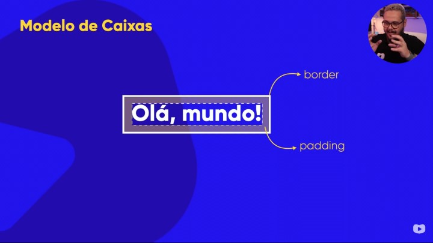
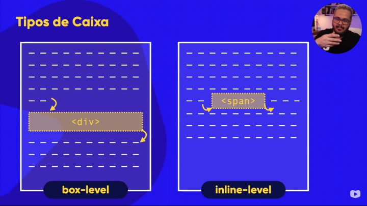
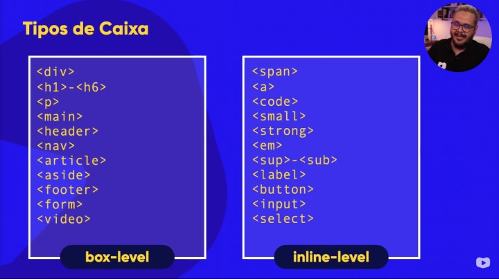

No exemplo abaixo vemos que a estrutura básica <h1>Olá, Mundo!</h1> possui uma caixa (box) ao redor.
A altura em inglês de uma box (caixa) é definida pelo termo height, já a largura é definida pelo termo width
Ao redor da caixa (conteúdo da box) circunda uma linha e que chamamos de border. Podemos separar mais a borda do conteúdo, criando um espaço denominado de padding (preenchimento)
Existe uma área que pode ser preenchida ao redor do padding e nisso chamamos de margin (da borda para fora)
O Outline é um contorno de uma linha que é desenhada em torno de elementos, fora das fronteiras, para fazer o elemento "se destacar".
Uma caixa do tipo box-level, sempre ele ocupa a largura total da tela e sempre se inicia em uma nova linha. Já a caixa inline-level ele não ocupa a linha inteira e não quebra linha.
 